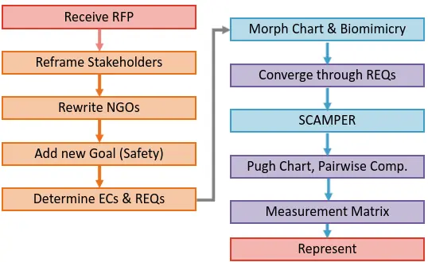
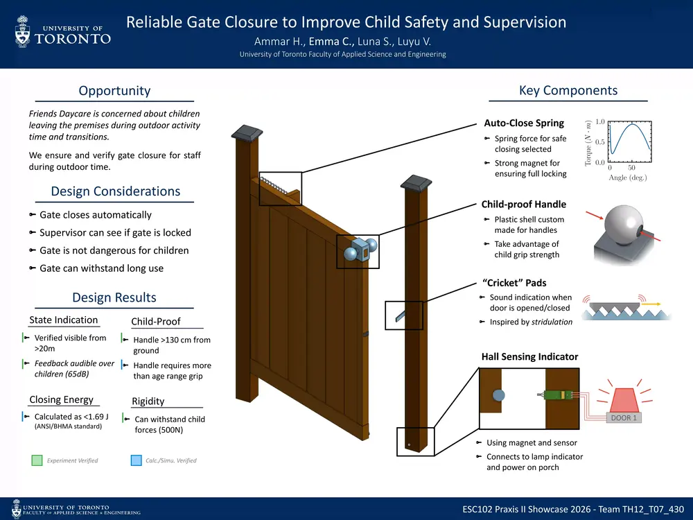
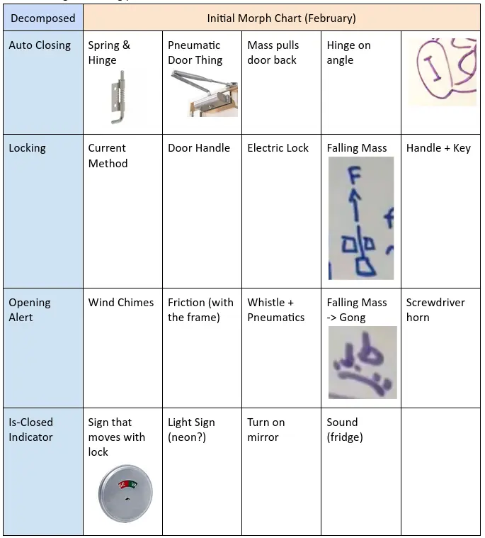

Praxis II Showcase
"The door opens!"
Team Credits: Emma Choi, Ammar Hasham, Luna SongDesign Summary
For our Praxis Showcase, we worked on engineering a gate that could fit the needs of our stakeholder, Friend's Daycare. This process went through numerous iterations as seen in Figure 1.

hi. This was our poster man :(

CTMF 1: Diverging with Morph Charts
After rescoping our opportunity and refining our NGOs, we wanted to diverge and cover to scope our solution space. For this, we used a Morph chart. Our design fundamentally lended itself to modularity. We split our design into subsystems (auto-closing, locking, alert, closed-state indication), making diverging with the morph chart a great fit.

Prior to showcase, my team reflected on our usages of different diverging elements. To us, the morph chart was particularly interesting:
By treating each subsystem independently, the morph chart prevented us from anchoring too early on one holistic concept. The resulting combinations seeded our four Beta Designs: Electric Boogaloo, Springs Ahoy, Rube-Goldberg, and Torque Handle.
CTMF 2: Diverging with Biomimicry
To further expand our solution space beyond conventional engineering references, we applied Biomimicry — drawing inspiration from strategies found in nature to address our design challenges.
A key challenge was producing a reliable, passive audible alert without electrical power. We looked to crickets, which generate sound through stridulation: rubbing textured surfaces together to produce a consistent tonal frequency. This directly inspired the "cricket pad" friction design used in Springs Ahoy and later carried into our final Knob Cover prototype, where ribbed pads on the door make contact with the frame during closing to produce a ~500 Hz tone — squarely within our target frequency range of 400–600 Hz — without any electronics.
Biomimicry also informed our thinking about self-closing mechanisms. The way a cat-flap or a weighted animal burrow entrance passively returns to a resting closed state under gravity paralleled our angled-hinge and hanging-mass concepts, reinforcing that a purely gravitational restoring force is a viable, low-maintenance solution.
CTMF 3: Converging with Pairwise Comparison
With several competing requirements and no single design excelling across all of them, we needed a principled way to establish which requirements mattered most before making final design trade-offs. We used a Pairwise Comparison to rank our five shortlisted requirements head-to-head:
- R3 — Gate closes safely (≤ 1.69 J, ≥ 5 s)
- R5 — Correctly indicates gate locking state
- R6 — Visual indicator perceivable from 10 m outdoors
- R7 — Audible alert when gate opens
- R12 — Lock withstands 500 N of applied force
Each requirement was compared against every other, and the one judged more critical received the point. The final priority order was: R12 > R7 > R5 > R6 > R3. Structural lock integrity ranked highest because a lock that fails under force directly endangers children regardless of how good the indicators are. The audible alert ranked second as the primary real-time notification mechanism for staff. Correct state indication and long-distance visibility followed, while closing energy — though important — ranked last as it is bounded by an existing standard and partially addressed by passive friction damping.
This ranked priority order then directly fed into our Pugh Charts and Measurement Matrix, ensuring that when designs were evaluated against our evaluation criteria, the criteria were weighted in a way that reflected stakeholder needs rather than arbitrary preference. It also informed the SCAMPER re-divergence step: knowing R7 and R12 were top priorities, we focused SCAMPER substitutions and modifications on reinforcing the audible alert and locking reliability of the leading candidate, Electric Boogaloo.
References
[1] Lofgreen, J., & Carrick, R. (2026). ESC102 Lecture Slides.